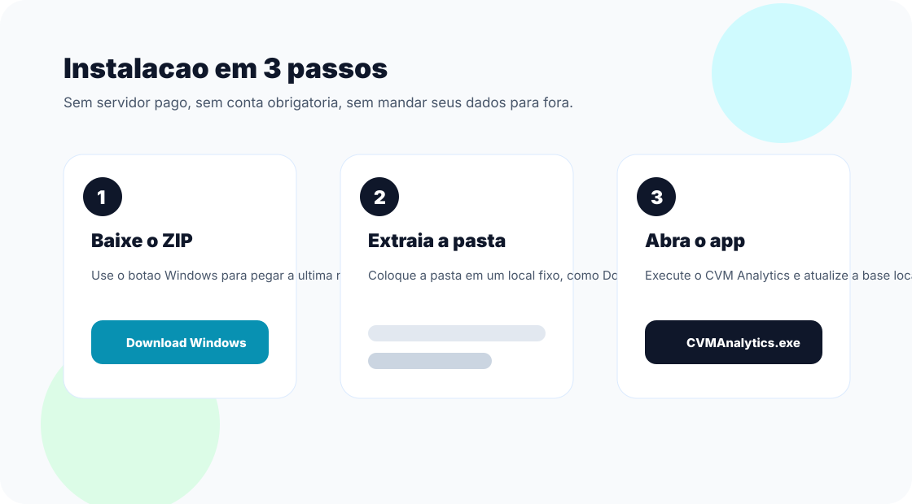

Como instalar
O app e distribuido como um pacote Windows. Baixe, extraia e abra o executavel. As atualizacoes futuras usam GitHub Releases.
Download Windows
Screenshots
A interface prioriza operacoes locais: atualizar base, acompanhar saude dos dados e consultar demonstracoes financeiras por empresa.
Dados ficam locais
A base SQLite fica na maquina do usuario. O processamento real acontece no desktop.
Atualizacao sob demanda
Use o app para atualizar empresas e anos quando precisar, com logs locais para auditoria.
Download publico
A landing estatica aponta sempre para o pacote mais recente publicado nas releases do GitHub.
FAQ
Preciso de conta?
Nao. O app desktop roda localmente e nao exige login para consultar a base no seu computador.
Os dados saem do meu PC?
Nao para o fluxo local. O app baixa dados publicos da CVM e persiste a base localmente.
Por que nao usar Vercel?
O processamento depende do banco local do usuario. A landing estatica reduz custo e deixa o site focado no download do desktop.
Como atualizo?
Baixe a ultima release ou use o mecanismo de atualizacao do app quando uma nova versao estiver disponivel.